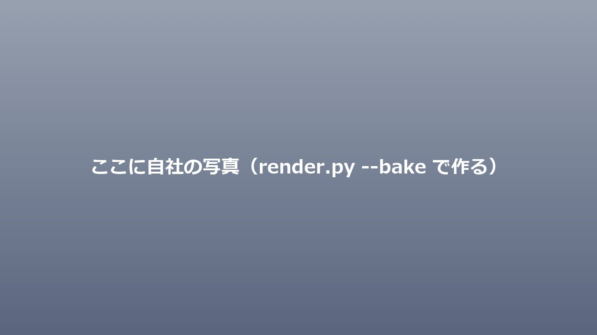
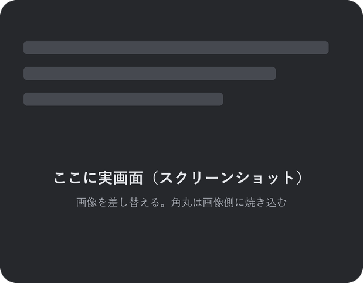

企業向け 実践的AI導入のロードマップ
AI伴走支援から最新AIO・SNS運用まで
INDEX
01AXの必要性
02AXの導入について
03AIO / SNSについて
Question
AI、使っていますか。
手を挙げてください。
01
AI Adoption in Japan
日本におけるAIの一般化
調べる・書くだけでなく、発注や採用にも入り始めています。
出典：総務省「令和7年版 情報通信白書」（2025年7月・2024年度調査）
01
AI Adoption in Japan
日本におけるAIの一般化
54.1%
検索の一番上にAIの答えが。

出典：PLAN-B「生成AIとの対話による購買行動調査2026」（2026年5月・500名）／右：Google検索の実画面
02
SPECIALIZED AX SOLUTIONS
基幹システムとの違い
お金を払う対象が違う
VS
02
4 Key Accounting Tasks
経理の4つの仕事
合わせてひと月 85時間
※ 従業員100名規模の目安
05
75% FUNDED BY THE GOVERNMENT
研修費用の4分の3は、国から
1
研修を始める1か月前までに、届け出が要ります
明日すぐ、というわけにはいきません
2
一時立て替えが生じます
助成金が入るのは、申請から半年ほど先です
3
助成対象は条件があります
研修のみが対象です。伴走支援は対象外です
4
支給可否は、労働局の審査によります
申請すれば通る、というものではありません
※ この制度は改正が頻繁です。実施前に必ず管轄の労働局・社会保険労務士にご確認ください。
02
IMPACT OF AX
AXの効果
天井はここではありません。
使う人が増えるほど、時間の増え方が変わります。
02
Difficulties & Challenges of AX
AXの難しさと課題
研修や提案の「あと」が無い
05
MONTHLY AI ADVISORY PLAN
月額顧問プラン
エントリー顧問
◯◯万円／月
月1回の訪問＋オンライン
チャット相談 無制限
業務棚卸し・ツール選定
プロンプト設計・作成
最低契約期間 6か月〜
スタンダード伴走
◯◯万円／月
月2回の訪問＋オンライン
実装・自動化の支援込み
社員向け勉強会（月1回）
チャット相談 無制限
最低契約期間 6か月〜
オーダープロジェクト
御見積
専門的な判断・システムや
大量処理が必要な
AI制作物
1プロジェクト単位
Aで始めて、必要になったらBへ。途中で切り替えられます
※ 記載の金額はすべて税別です。訪問回数・内容はご相談に応じて調整します。
「これ、できるかな？」と思ったこと。
そのほとんどは、もうAIで解決できる時代です。
お気軽にご相談ください
03
IT IMPACTS RECRUITMENT, TOO.
採用のも影響します
76.2%
生成AIを使って会社を探している
就活生・求職者
70.8%
知らなかった会社を、AIで知った
AIが、会社を紹介している
採用の入口もAIに。
出典：ナイル「就職活動における生成AI活用実態調査」（2026年3月・419名）／moovy（2025年7月・26卒319名）
03
IN THE ERA AHEAD
これからの時代
これからの時代、
AIに拾われなければ
候補にさえなれない。
これから2028年、企業間取引の 90% にAIが介在する予測。6人に1人が、ほぼ全員に。
出典：Gartner「Top Predictions for 2026」（2025年10月21日発表）